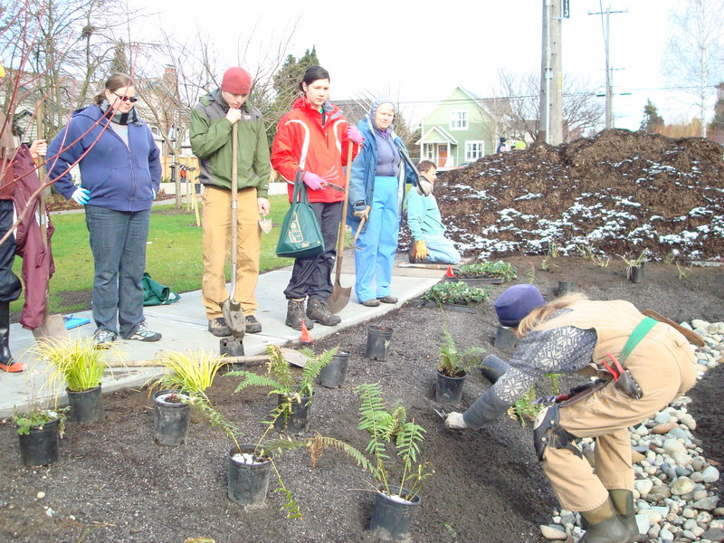
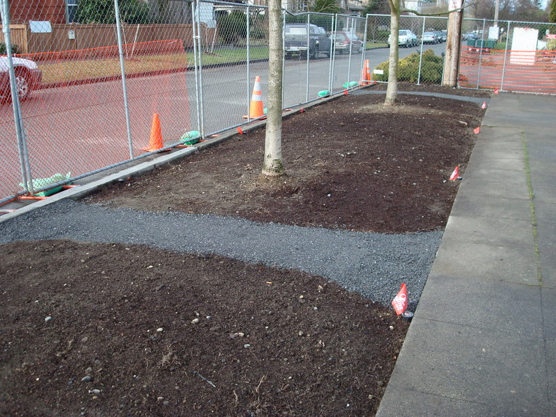
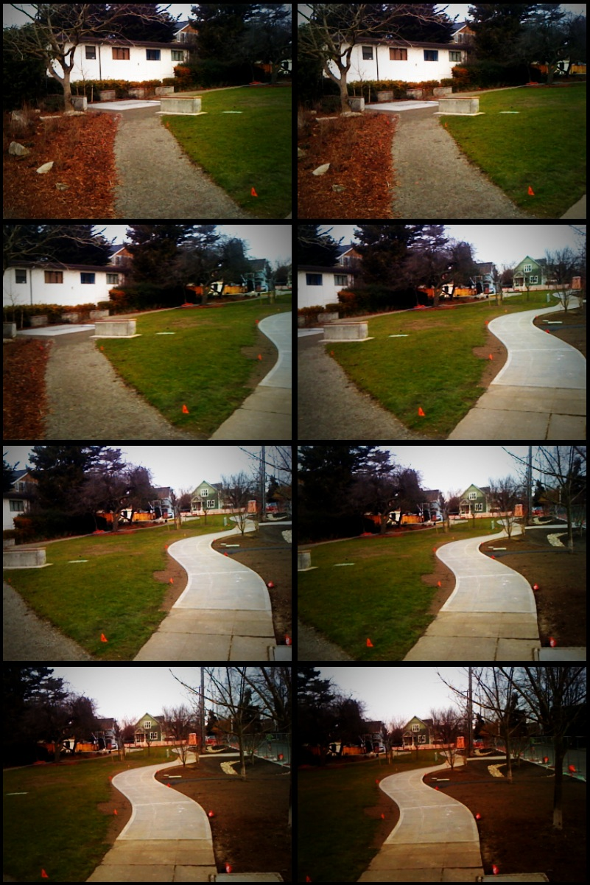
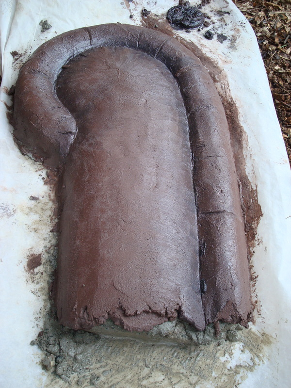
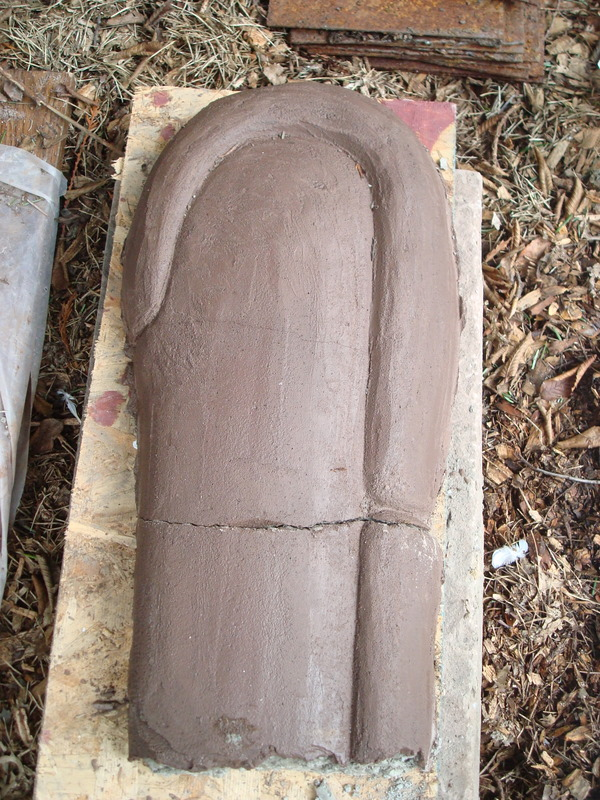
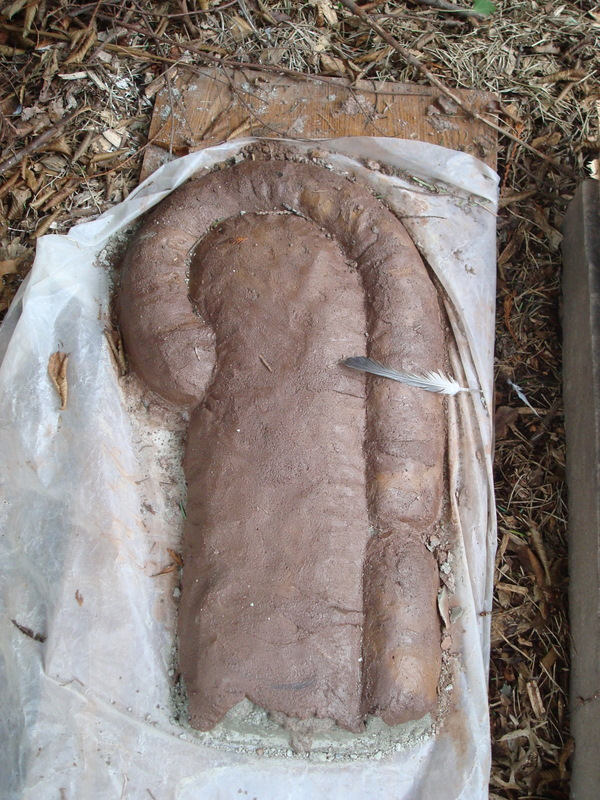
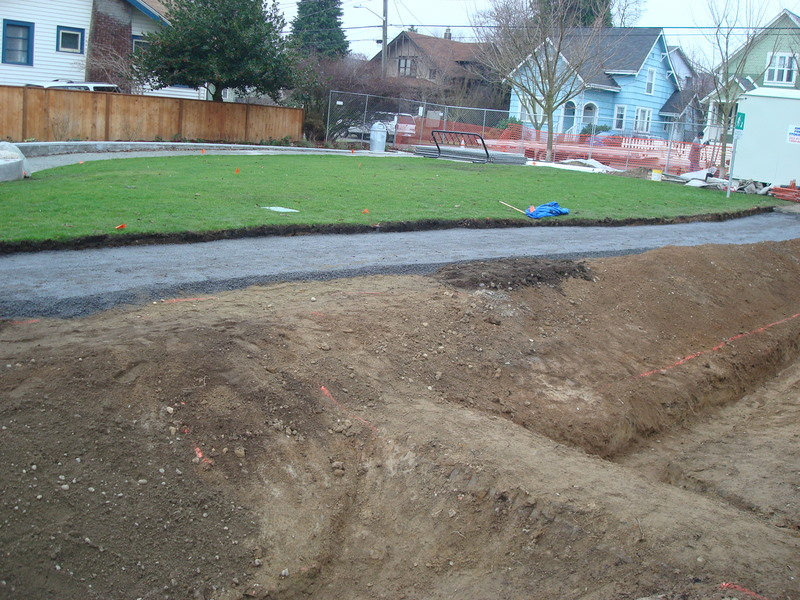

I had the good fortune of hearing from a former neighbor – Shirley (Francis) Faris. Here is what she remembers about Bill Boutin’s store: “We lived at 1742 [62nd] and my mother would send me to buy bread or milk. The store had a central door with big windows on either side. The floor was wooden planks. From the door straight back was a long wooden counter where the cash register was located along with many jars and containers with candy. The candy was probably a penny to a nickle. The chocolate bon bons were usually with vanilla filling but if you got a pink filling you got a free one.”
I think that it is wonderful to hear from people who recall the history of the place.
Posted on March 8th 2009 by David Folweiler in History | Comments Off on Oral History of Bill Boutin’s corner store |
We held a planting party. Despite warnings of much frozen precipitation and cold temperature, we only suffered the latter and even that was temporary. As the day progressed, the sun burned through and it was nearly Spring like weather.
A few of my photos are here.
Gabriella demonstrates proper planting technique
Gordon’s photos (no doubt better than mine) will be online soon.
Posted on March 8th 2009 by David Folweiler in construction,Events | Comments Off on Planting Party! |
Today, we had a large planting party at the park. There were some 600+ plants and 200+ bulbs to put into the ground and mulch. We did it! There were many volunteers, perhaps 30-40 all together.
Michael Harthorne of the Ballard News Tribune showed up and wrote us up. Later, I thought I saw a “geeky Swede”. Apparently, I was right.
Posted on March 8th 2009 by David Folweiler in Events,News | Comments Off on News Spreads Quickly |
Here are the latest photos, just before planting for the raingardens.

raingarden
cut through path in planting strip
Posted on February 25th 2009 by David Folweiler in construction | Comments Off on Park Progress – pre-planting of raingardens |
I took a photo over the fence from the South yesterday on time delay: eight shots of the layout of the park.

Posted on February 15th 2009 by gordon in Misc. | Comments Off on Park in progress |
We got some coverage, as did the 14th Ave Visioning Project, on the Seattle Channel. The 14th Ave Project is about a third of the way through (12:42), we’#39;re right after that at 16:23.
Posted on February 1st 2009 by David Folweiler in News | Comments Off on Video on The Seattle Channel |
As a child, I loved to watch construction. Especially if it involved heavy machinery. That love has not dissipated much over time. Last week, I got to watch guys pour and smooth concrete. I love it!
(more…)
Posted on January 29th 2009 by David Folweiler in construction | Comments Off on concrete pour |
Nathan Arnold is our furniture artist. He’s making the concrete “living room”. He’s setting up in Barker’s driveway to construct some of the furniture. He came by to talk to us at the regular construction meeting about his process. Later, I trundled over to Barker’s office to see his samples. He’s been trying to mimic the well-worn leather couch look we want. Below is his artistry.
best version of couch arm simulation
early sample of couch arm
second couch arm sample
Posted on January 23rd 2009 by David Folweiler in construction | Comments Off on couch samples |
Dariotis’ crew finished the grading of the rain gardens. Notice the deep trough designed to store stormwater. The check dam (shown below) serves to allow the stormwater to pool and soak slowly into the ground and aquifer.
check dam in rain garden
Posted on January 20th 2009 by David Folweiler in construction | Comments Off on Rain Garden Grading |
(more…)
Posted on January 15th 2009 by David Folweiler in construction | Comments Off on Park Progress |
« Previous Page • Next Page »


{kind=link}
{kind=link}
{kind=link}
{kind=link}
{kind=link}
{kind=link}
{kind=link}
{kind=link}
{kind=link}
{kind=link}
{kind=link}
{kind=link}